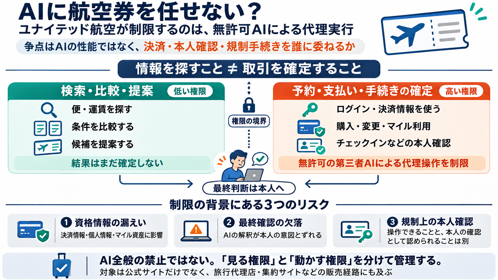

金銭が確定する
運賃、手数料、座席指定、付帯サービスの購入が発生する。条件次第では取消や変更にも費用がかかる。
誤操作 → 直接的な金銭損害

Agentic Travel
ユナイテッド航空は、無許可の第三者AIエージェントが旅行者に代わって予約する行為を制限する。争点はAIの性能ではなく、決済・本人確認・規制手続きを誰に委ねるかだ。
What is restricted?
制限の中心は、第三者の個人向けAIエージェントが、本人の資格情報を使って予約や関連操作を完了すること。検索・比較・提案まで一律に否定する話ではない。
High-stakes transaction
航空券予約には、金銭・アカウント状態・規制手続きが同時に関わる。誤りは「おすすめが外れた」で終わらず、取消料、再発券、サポート対応へ波及する。
運賃、手数料、座席指定、付帯サービスの購入が発生する。条件次第では取消や変更にも費用がかかる。
予約記録、搭乗者情報、会員状態、保存済み決済、MileagePlus milesの残高に影響し得る。
チェックインや手荷物に関する確認など、単なる入力代行では置き換えにくい手続きが含まれる。
More handoffs, more exposure
AIが利用者と航空会社の間に入ると、資格情報、意図、実行結果が複数の境界を通過する。接続点が増えるほど、漏えい・誤解釈・責任分界の問題も増える。
Risk one
予約を完了するAIには、閲覧だけでは足りない。ログイン、決済、会員資産へ触れる資格情報が必要になり、漏えい時の影響範囲が大きくなる。
カード番号、保存済み決済手段、請求情報。無許可利用は直接的な金銭被害につながる。
氏名、旅程、連絡先、搭乗履歴。旅行情報は所在や行動予定も示し得る。
MileagePlus milesは価値を持つ会員資産であり、利用や移動には強い統制が必要になる。
Risk two
企業が懸念するのは、AIが失敗する可能性だけではない。本人が内容を見て止める「最後の制動」が、自動化によって抜け落ちることだ。
「安くて便利な便」の優先順位や、許容できる変更条件が明示されない。
価格、空港、時間、手荷物、払い戻し条件を独自に解釈する。
在庫切れや価格変動時に、代替便や別運賃へ自動的に切り替える。
本人確認が弱いと、購入、変更、マイル使用が止められない。
Risk three
航空手続きには、旅行者本人の確認や意思表示を前提とする領域がある。AIが入力を完了できても、その行為が制度上の本人確認を代替できるとは限らない。
予約番号の入力、搭乗者情報の転記、チェックイン画面の進行などは、ソフトウェアとして実装できる。
記事は、手荷物に禁止物質が含まれないことを旅行者本人が確認する要件を例示している。
Information versus authority
運賃を探し、候補を比較する行為は、アカウントを変更しない。購入やチェックインは、金銭・会員資産・規制手続きを動かす。
Across the booking path
ユナイテッドは、自社サイトだけを守ればよいとは考えていない。旅行代理店や集約サイトを含む流通経路でも、無許可の個人向けAIによる代理操作を制限する方針だ。
Visibility without surrender
ユナイテッドは利便性を全面的に閉じるのではなく、運賃の可視性を維持しながら、取引確定の統制を残そうとしている。
Four clarifications
方針の意味を理解するには、「AIを使うこと」と「AIへ取引権限を渡すこと」を分ける必要がある。現時点で詳細な製品別・操作別の線引きは明らかでない。
Beyond cybersecurity
無人エージェントが増えると、検索・予約の件数だけでなく、例外処理や顧客救済の負担も増え得る。航空会社には、実行回数より「正常に完了した取引」の質が重要だ。
AIは人間より高速かつ大量に条件を試せる。過剰な検索はシステム負荷や流通コストを押し上げる可能性がある。
利用者、AI事業者、集約サービス、代理店、航空会社の間で、意図と実行結果の追跡が難しくなる。
誤購入や条件誤認が起きれば、変更、返金、再発券、苦情対応が必要になる。自動化の失敗は人手へ戻る。
Benefits and friction
制限はリスクを消すのではなく、誰が負担するかを変える。航空会社の統制は強まる一方、完全自動化を期待する利用者やAI開発者には摩擦が増える。
A five-part reading
方針はセキュリティだけでは説明しきれない。規制、運用、利用者の信頼、流通戦略を重ねると、航空会社が制限を選ぶ理由が見える。
資格情報の共有、漏えい、乗っ取り、誤実行の攻撃面を減らす。
本人確認や本人の意思表示が必要な手続きを迂回させない。
過剰照会、例外処理、返金、再発券、サポート負担を管理する。
安全性だけでなく、何が許可されるかを利用者が理解できる状態が必要。
運賃の可視性は維持しながら、予約・発券という中核プロセスの主導権を守る。
What the case does not show
示されたリスクは現実的だが、どれほど頻繁に、どの程度の被害が起きたかは分からない。慎重になる理由と、広い禁止が最適だという証明は同じではない。
AI代理予約による誤購入、漏えい、不正利用が実際に何件起きたのか、定量情報が示されていない。
漏えい、乗っ取り、プロンプト攻撃、誤解釈、監査不能のどれを最重要視しているか不明確。
どのAI、接続方式、権限、操作、確認方法なら許可されるのか、利用者から見て予見しにくい。
最小権限、決済トークン、必須確認、監査ログなどが、どこまで検討されたか読み取れない。
Safer than credential sharing
将来の選択肢は、無制限の代理操作か全面禁止かの二択ではない。権限を細分化し、高リスク操作だけを本人承認へ戻す設計が考えられる。
検索、提案、仮押さえ、購入を別権限にし、必要な操作だけ許可する。
カード番号をAIへ渡さず、用途・金額・期限を限定した支払い権限を使う。
運賃規則、総額、旅程、マイル利用を本人が確認するまで確定させない。
購入、変更、チェックインなど、リスクに応じて追加認証を求める。
誰が、どの指示で、どの情報を使い、何を実行したか追跡可能にする。
AI経由の誤操作を検知し、迅速に停止・取消・問い合わせできる導線を用意する。
Progressive authorization
AIに許す操作を一段ずつ増やし、結果が重くなる地点で本人を戻す。これなら利便性を残しながら、不可逆な操作を人間の意思に結び付けられる。
公開運賃、時刻、経路、条件を取得する。
候補を比較し、選定理由と制約を説明する。
期限付きで在庫や条件を保持し、まだ決済しない。
総額、運賃規則、旅程を提示して確定する。
チェックインや本人の宣誓を伴う確認へ進む。
Sources and interpretation
確認できる事実と、本デックの分析・提案を分けて読む必要がある。個別の規則、技術仕様、許可条件は、正式なポリシー原文での確認が前提となる。
第三者の個人向けAIエージェントまたはアシスタントの無許可利用を、デジタル基盤、旅行代理店、集約経由で制限する方針。予約・発券・流通ポリシーの更新にも言及。
Primary statement個人向けAIアシスタントがユナイテッドのシステムへアクセスし、旅行者に代わってチケットを予約することを防ぐ趣旨を報道。
Reported contextKayak、Hopper、Google Flightsなどで運賃を探す導線は残り、利用者が航空券を発見する難しさは大きく増えないとの解釈。
Expert interpretationThe real question
AIエージェント時代の争点は、「AIを使うか」ではない。誰に、どの情報と権限を渡し、どの操作で本人を戻すかである。
米ユナイテッド航空は、顧客のAI（人工知能）エージェントとの取引を望んでいない。 同社は11日、個人向けAIアシスタントが自社システムにアクセスしてチケットを予約することを防ぐと発表した。 Copyright ©2026 Dow Jon…
United Logo # United Restricts Access for Third-Party AI Agents November 11, 2026 Protecting our customers’ data and …
United Airlines said on Wednesday that it is banning artificial intelligence agents from making flight reservations on b…
Transportation # United Airlines blocks AI agents from booking flights ahead of holidays Add as a preferred source on …
### アンソロピック、9000億ドルの計算資源コミットメントに注目が集まる中、最大1.02兆ドルの評価額で記録的なAI IPOを目指す TradingKey - 「Claude」の開発元であるアンソロピックは、世界のテック株における資金…